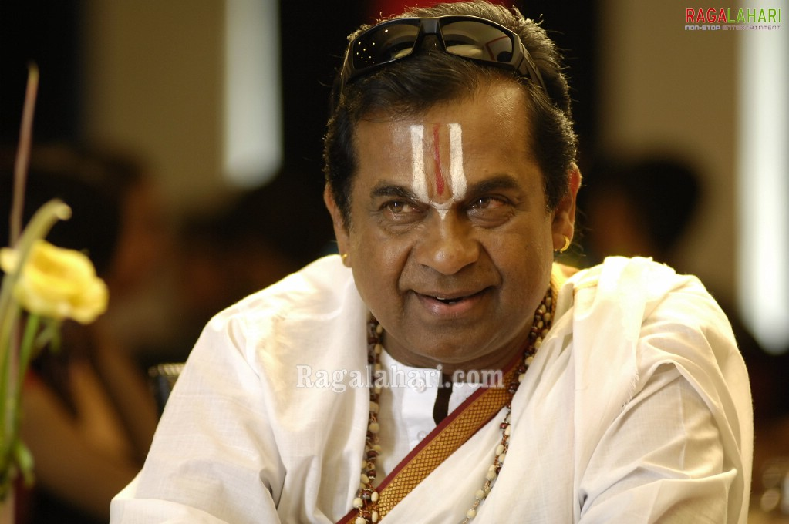

AK
Chicago, IL 60608 | +19765788778 | xyz@gmail.com

Professional Summary
Graduate of computer science with experience working across the front-end of software
development. Looking for a role where I can grow and learn from experienced teammates. Detailoriented,
organized, and meticulous individual. Enthusiastic team player ready to contribute to
company success.
Skills
- Python
- Javascript
- MongoDB
- MySQL
- EclipseIDE
- React
- HTML/CSS
- RESTful services
- Customer Service : *****
- Team working : ****
- Organizational Skills : ****
Work History
Python Developer
Amazin Automation Solutions -- Bangalore, India
Automated Deployment Orchestrator
08/2020 to 06/2022
- Employed tools such as Terraform to implement IaC, enabling the definition and provisioning of
infrastructure components in a declarative manner.
- Configured Jenkins pipelines to trigger deployment workflows on code commits, ensuring a
seamless and efficient CI/CD pipeline.
- Orchestrated container deployment and scaling using Docker Compose for local development
and Kubernetes for production environments.
- Utilized version control for configuration files and deployment scripts to track changes and
ensure reproducibility.
- Leveraged Kubernetes for container orchestration and implemented self-healing mechanisms.
Software Development and Internet of Things Intern
05/2017 to 07/2017
- Developed a Robot which tracks the path along and moves accordingly using perception
ability and motion ability
- Leveraged wireless communication protocols such as MQTT to transmit real-time sensor data,
system status to centralized IoT platform.
- Utilized cloud computing for decision support, enabling the robot to leverage powerful
cloud-based algorithms and machine learning models.
- Integrated a suite of IoT sensors, including environmental sensors (temperature, humidity, etc.),
GPS modules, and proximity sensors.
Education
Master of Science : Computer Science
Lewis University - Chicago, IL
Bachelor of Technology
VJIT - Hyderabad, India
Projects
Student Assist App
- Created a collaboration type assist app which acts as a virtual environment
- Used UI layouts to create the front-end of the application for easier access
- Created two data models for the functionality of collaboration&socialization and Health&Safety
- Used GeoLocation to detect the movement of the user to detect the fall and send a Panic Alert
message
Jump Arena 2D game development
-
Developed an interactive 2D game using buildbox on Playstore
Lung Cancer Detection using Machine Learning
-
Machine Learning based decision support system provide the contribution to doctors in their
diagnosis decisions.
-
Used Machine Learning and Deep Learning to process data and create models for diagnosis.
-
Combining the processing of patient information with data from Chest X-Rays using CNN with
the well- known pre-trained model, CapsNet network for data is used in the development of the
project.
Awards and Certifications
- Employee of the Month - ABC Inc. (August 2016)
Other